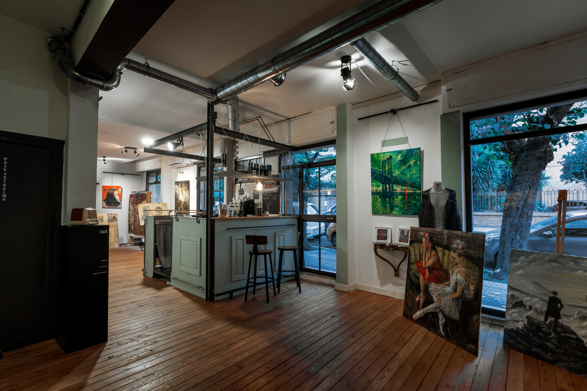
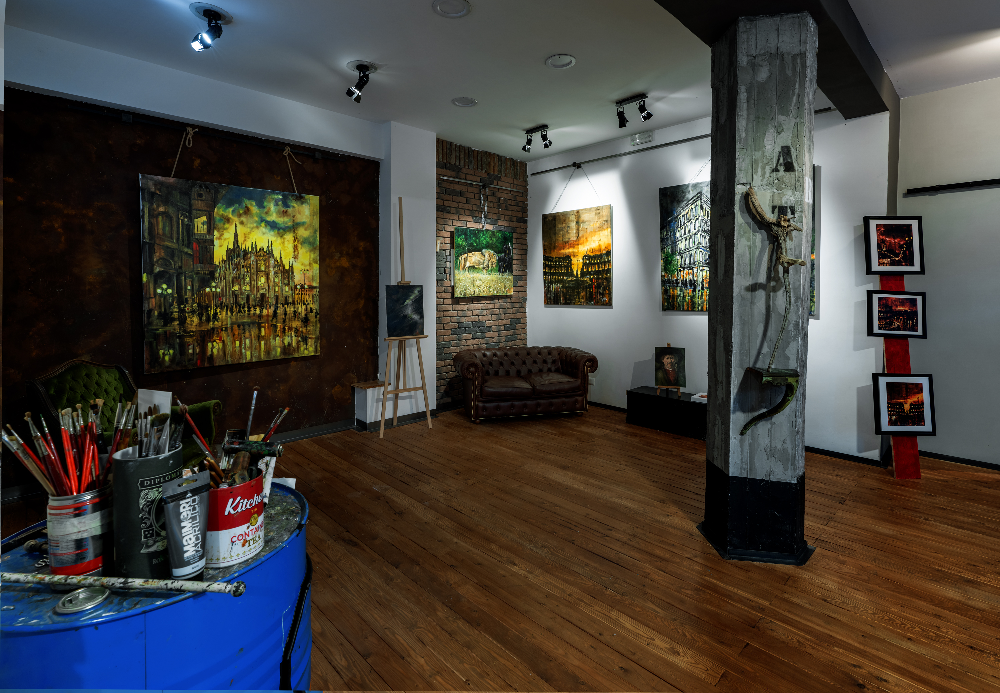
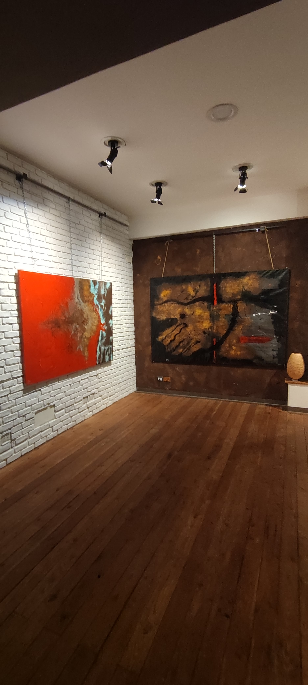
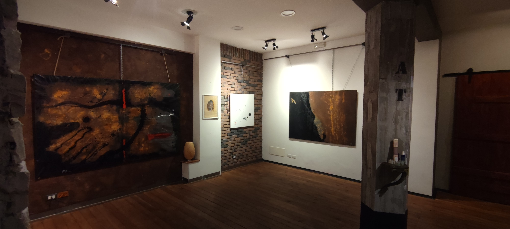
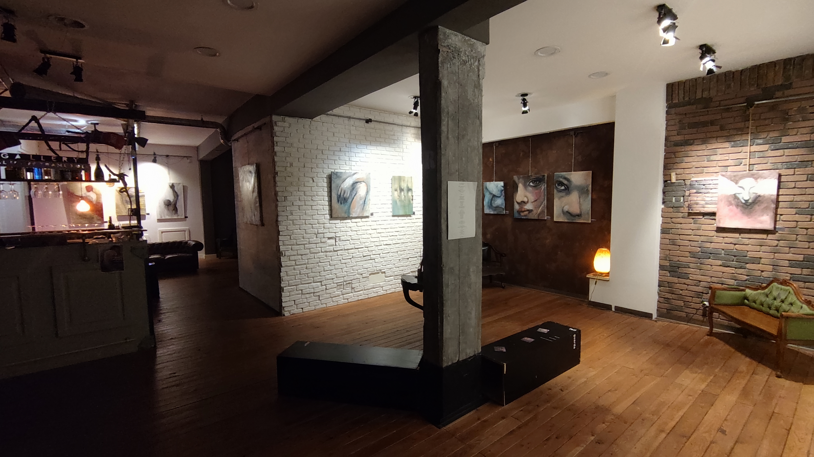
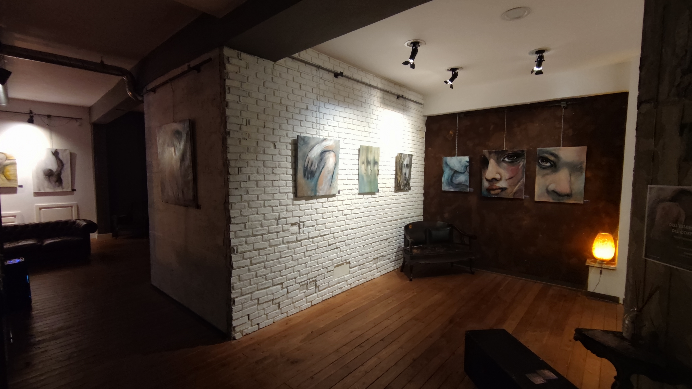
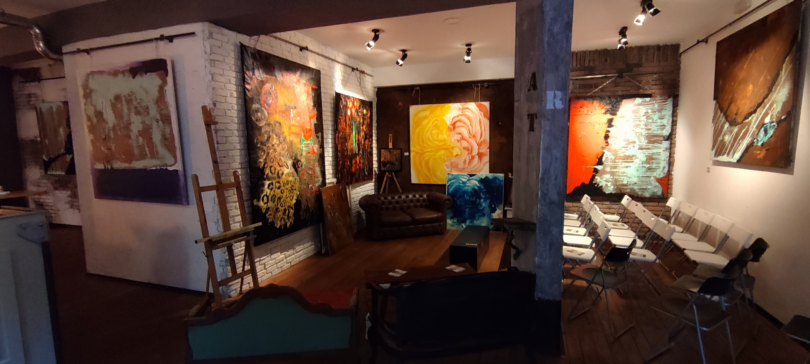

Atelier permanente in Via Cimone 72A e spazio culturale per mostre terze, eventi editoriali e laboratori.
La ArT Gallery riserva costantemente i propri ambienti all'accoglienza di progetti curatoriali indipendenti, mostre personali e collettive di altri artisti, reading, concerti d'autore e presentazioni. Uno spazio raccolto e metropolitano caratterizzato da parquet in legno naturale, illuminazione tecnica orientabile a binario e pareti allestibili per grandi formati.

Atelier, vetrate su strada e area accoglienza

Sala espositiva principale, pareti attrezzate e binari luce

Spazio eventi, vernissage e allestimenti

Prospettiva interna e illuminazione tecnica

Prospettiva interna

Prospettiva interna

Prospettiva interna
Un percorso sonoro immersivo tra le opere della galleria: un viaggio intorno ai tasti che attraversa il repertorio classico fino alle frontiere della musica sperimentale contemporanea.
Workshop esperienziale per Rome Future Week sul rapporto tra intelligenza artificiale, linguaggio umano ed emozione poetica.
Mostra personale curata da Walk of Ward Entertainment Events, con musica dal vivo e sessioni d'incontro nel fine settimana.
Mostra fotografica d'autore dedicata a sguardi, ritratti intensi e suggestioni visive urbane.
Esposizione di pittura e creazioni materiche con cristalli (a_kapo by T.H.) dell'artista romana-giapponese Tomoyo Haneishi.
Presentazione editoriale (Alpes) e incontro con l'autore sul tema del diritto universale alla partecipazione sociale e culturale.
Personale di opere materiche e pittura gestuale densa di chiaroscuri e contrasti.
Direzione artistica di Tiziana Monoscalco e testo critico di Alfio Borghese; performance musico-pittorica di Maurizio Fioretti.
Esposizione personale dedicata alla sperimentazione formale e al colore materico su tela.
Laboratorio intensivo di cinque incontri di scrittura immersiva circondati dalle opere della galleria.
Personale a cura di Craving Art: pittura figurativa su supporto grezzo di tela di juta.
Esposizione a cura di Craving Art sull'anatomia, l'intimità espressiva e la fragilità della materia corporea.
Personale pittorica: un'intensa danza tra demoni interiori e complessità dell'animo femminile.
Retrospettiva delle opere realizzate tra il 1974 e il 1982 dall'artista ritrovato.
Mostra fotografica patrocinata da Ambasciata Argentina, Società Geografica Italiana, Città di Narni, IILA e Italia Nostra; intervento dell'Ambasciatore Gherardo La Francesca.
Presentazione letteraria del romanzo condotta con la partecipazione della giornalista Stella Colucci.
Personale dedicata all'equilibrio cromatico, alla luce e all'espressività geometrica.
Esposizione personale di geometrie astratte con introduzione del pubblicista Calogero Rotondo.
Serata d'arte e canzone d'autore: concerto acustico dal vivo tra le opere della galleria.
Inaugurazione ufficiale della sede espositiva e dell'atelier d'artista in Via Cimone 72A a Roma.